CINTA 01 Terror indie en primera persona · Windows PC
BACKROOMS: ESCAPA
Has atravesado la pared equivocada. Zumbido de fluorescentes, moqueta húmeda y kilómetros de pasillos amarillos. Algo te sigue. Encuentra la salida.
Build temprana v7.5.0 (hotel nuevo) · Windows 64 bits · ≈ 269 MB (zip). Código y versiones (se abre en una pestaña nueva)
- 8 niveles
- 7 criaturas
- 1 salida oculta por nivel
- 2-4 jugadores en cooperativo (prueba temprana)
- Hecho con Unity
// 01
Tráiler y gameplay
// NOVEDADES
Novedades
Qué ha cambiado en cada versión, de la más nueva a la más antigua. Todas se descargan desde las versiones en GitHub (se abre en una pestaña nueva).
-
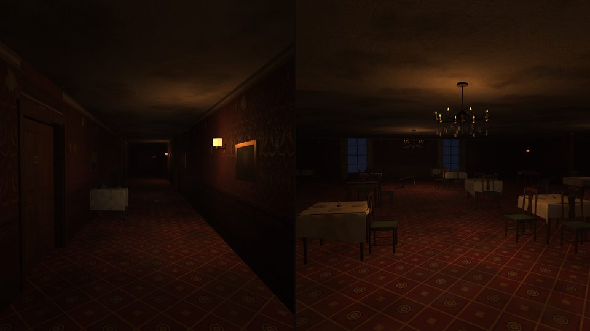
Nivel 3 nuevo: el hotel
- Nivel 3 rehecho de arriba abajo: ahora es un hotel de verdad, con pasillos rectos larguísimos de puertas numeradas, vestíbulo con recepción y ascensores, salón de baile, comedor, escaleras, lencería y pasillos de servicio.
- Habitaciones que se abren: muchas puertas se abren solas al acercarte (y también para los monstruos). Dentro hay cama, armario, mesillas, escritorio, lámparas y, a veces, baño.
- Texturas y muebles nuevos: papel damasco granate, zócalo y puertas de caoba, moqueta con dibujo, techos de yeso desconchado, cuadros, arañas de cristal y piano. Las salas tienen mesas de banquete y de comedor con manteles caídos (algunos torcidos o manchados, otros por el suelo), sillas de madera y de banquete (algunas volcadas), columnas clásicas estriadas y un mostrador de recepción de madera y mármol.
- Luz: apliques y arañas que todavía funcionan (algunos parpadean o están muertos), un poco de luna fría por los ventanales de las salas y una linterna más ancha y suave en este nivel. Sigue siendo oscuro, pero ya se ve por dónde vas.
- Todo se alcanza: la salida, las pilas, las llaves y cada habitación abierta tienen siempre camino, tanto para ti como para los monstruos.
- Todos los recursos nuevos son trabajo propio o CC0 y están en los créditos.
- Multijugador: protocolo MP-8 (sin cambios de red), pero el mapa del Nivel 3 es otro: jugad todos con la v7.5.0.
-
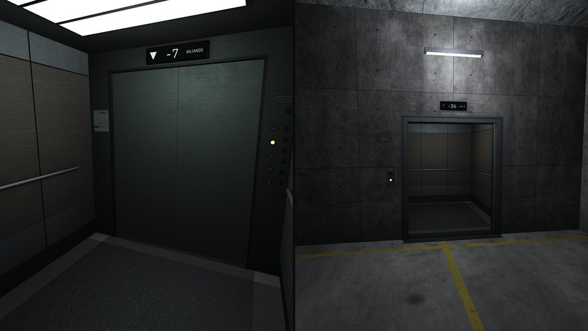
Ascensor nuevo
- Ascensor realista, por dentro y por fuera: cabina nueva de acero cepillado y madera, con pasamanos, botonera con luces, indicador de planta, sombras suaves horneadas en rincones y juntas, y un rellano de verdad al salir.
- Nivel 1 (Aparcamiento): texturas nuevas de hormigón con juntas, óxido, rozaduras, manchas de aceite y charcos, con el mismo brillo de antes.
- Parque de bolas arreglado: al vadear ya no se abre un hueco con una «foto» plana de bolas; las bolas vuelven a rodear las piernas. Además, la salida se alcanza siempre a pie (con algunos mapas no se podía llegar).
- Talasofobia: con el casco ya se nada bien desde el fondo (Espacio sube, Ctrl baja y W nada hacia donde miras). Al abrirse la jaula aparece el objetivo, y unas algas verdes luminosas marcan la boca de la gruta.
- Campo infinito: las casas tienen puertas normales y se entra de pie, sin agacharse. Además, son un refugio: los monstruos no pueden entrar; si te persiguen hasta la puerta, se quedan fuera, pierden tu rastro y se van.
- Todos los recursos nuevos son trabajo propio o CC0 y están en los créditos.
- Multijugador: protocolo MP-8 (sin cambios de red), pero jugad todos con la v7.4.0.
-
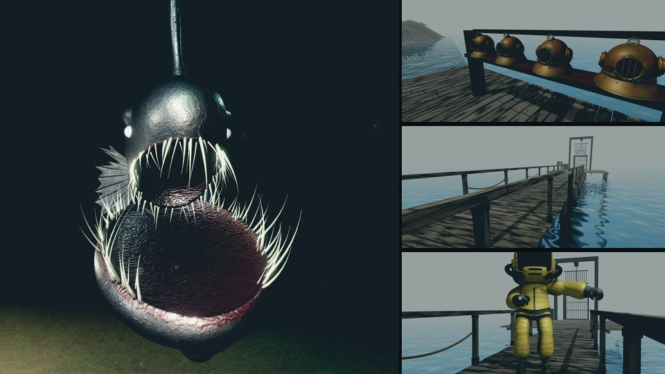
Nuevo nivel 7: Talasofobia
- Nuevo nivel 7, «Talasofobia» (ahora es el último): sales de una casa inundada a un mar gris sin fin, con niebla, casas sobre pilotes, una barca y un faro enorme a lo lejos.
- Nadar y bucear: nadar cansa y, sin casco, bajo el agua se acaba el aire.
- Los Pálidos: peces blancos que rondan a quien nada. Si uno empieza a dar vueltas a tu alrededor, sal del agua o sube a la barca.
- La barca (caben cuatro), una pistola de bengalas opcional y, al final del muelle, cascos de buzo con lámpara y una jaula que baja a la fosa.
- El Farolero: un rape gigante de diseño propio que patrulla el fondo con su señuelo de luz. Tiene una mandíbula enorme, dientes translúcidos, ojos lechosos y piel húmeda, y abre la boca al cazar. Se sale buceando por una gruta hasta una poza con aire.
- Más realista: cascos de latón, traje de buzo amarillo, muelle de madera gastada y guantes a escala real (ya no son enormes) en todos los niveles.
- Nivel 0 renovado: mucho más grande y largo, con salas enormes llenas de pilares, papel pintado, moqueta y techo nuevos, y más oscuro. Las pantallas fluorescentes son ahora empotradas, con marco y difusor (algunas amarillentas, sucias o con bichos muertos dentro). Hay grupos apagados o que parpadean (iguales para todos en multijugador), rincones en penumbra y una bruma oscura a lo lejos. La salida y el punto de partida siguen iluminados.
- Más Talasofobia: esculturas colosales en el fondo, un sofá y una cama de verdad en las casas, la barca por dentro de madera oscura y seca con un motor pequeño, una jaula por la que se puede caminar y un Farolero más grande.
- Selector de niveles nuevo: ocho tarjetas con capturas reales del juego, descripción y vista previa grande. Funciona con teclado, ratón y mando; en multijugador elige el anfitrión.
- Sonido más limpio: se acabó el «soplido» que se oía de vez en cuando en algunos niveles. Además, los gruñidos de algunos monstruos ya no llevan ruido de viento.
- Arreglos: sin rectángulos negros en algunas vistas, sin caras invertidas en los modelos nuevos, sin zumbido de fluorescentes en el menú y ya no te quedas parado al nadar despacio (o en el túnel de la gruta) con muchos FPS.
- Todos los recursos nuevos son trabajo propio o CC0 y están en los créditos.
- Multijugador: protocolo MP-8, todos necesitáis la v7.3.0.
-
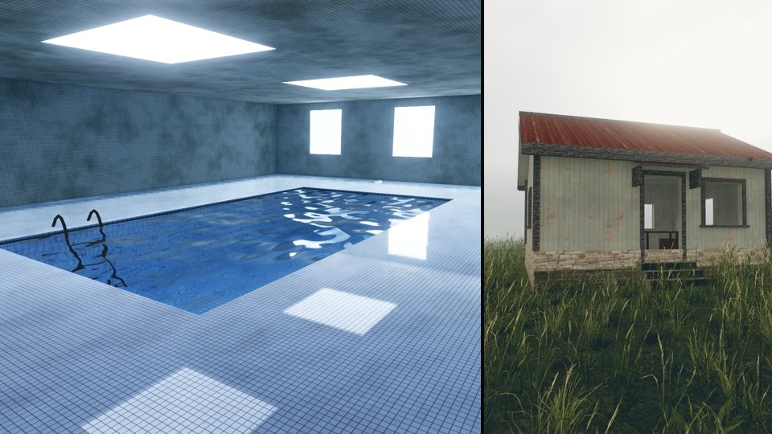
Poolrooms como en Blender, Campo más realista y reanimar con E
- Sala de la piscina como en los renders: ventanas con menos brillo, sin huecos oscuros con forma de puerta, y paredes de hormigón gris claro con manchas.
- Poolrooms más luminosos, sobre todo los pasillos inundados, con la misma agua y el mismo ambiente.
- Campo infinito: casas con luz horneada en la GPU y unas 107 rocas escaneadas CC0. Sigue cargando en unos 2 s.
- El monstruo ya no atrapa a través de las paredes: tiene que verte y poder llegar hasta ti.
- Reanimar con E: mantén E junto a un compañero derribado (anillo de progreso). Te arrodillas, le tiendes la mano y él se levanta. Soltar E o alejarte lo cancela.
- Fuera el inclinarse con Q/E, la música junto a la salida del Campo y el «soplido» (siseo VHS y viento) que se oía en niveles sin agua.
- Piscina sin «rescate» automático: ya no te teletransporta a la playa; se sale por las escaleras (o trepando por el borde).
- Multijugador: protocolo MP-7, todos necesitáis la v7.2.0.
-
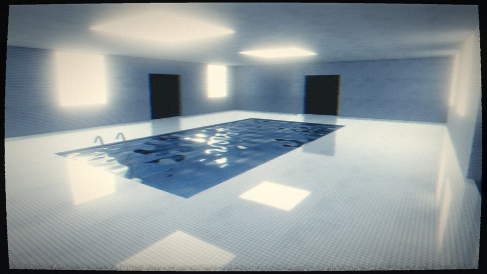
El agua de los Poolrooms, como en los renders
- Agua nueva en todo el nivel, en la piscina, los pasillos y las salas inundadas. Es clara, de color azul acero, con oleaje fino que deforma el fondo, refracción y reflejos que se rompen con las olas.
- Cáusticas solo bajo el agua: desde fuera ya no se ve la red nítida en el fondo; al bucear se ven enteras.
- Suelo brillante: la playa refleja ventanas y tragaluces, la baldosa del vaso es más grande y una línea oscura marca el borde del agua.
- En calidad Baja, versión ligera sin reflejo planar. Coste en una RTX 3050 a 1080p: casi nada en la sala y unos 1-2 ms en el resto del nivel (Medio y Alto).
- Multijugador sin cambios de red (protocolo MP-6). Mejor que todos tengáis la v7.1.3.
-
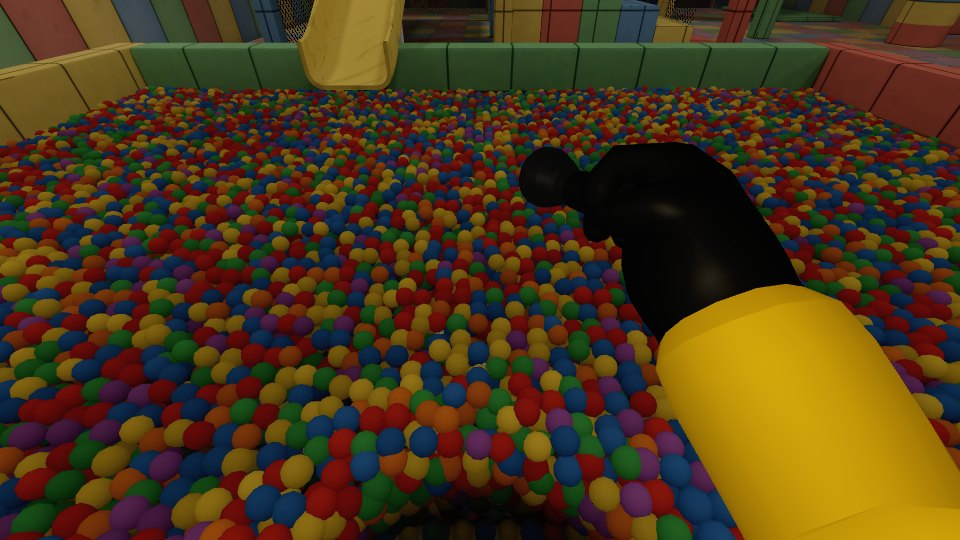
Bolas de verdad en el Parque de bolas
- Ahora sí se ven las bolas 3D: en la v7.1.0 y la v7.1.1, el ejecutable de Windows se quedaba sin la versión del shader de las bolas y solo mostraba el fondo plano, como una moqueta estampada. Ya está arreglado.
- Todas se mecen y se apartan a tu alrededor cuando vadeas: abren hueco, empujan a las de al lado y hacen ondas. También pasa con tus compañeros en multijugador y con el monstruo de las bolas.
- Coste ligero: entre 0,5 y 2,3 ms por fotograma en una RTX 3050 a 1080p, según cuántas bolas se vean.
- El límite de luces en tiempo real ya no se pasa al moverte.
- Multijugador sin cambios de red (protocolo MP-6). Mejor que todos tengáis la v7.1.2.
-
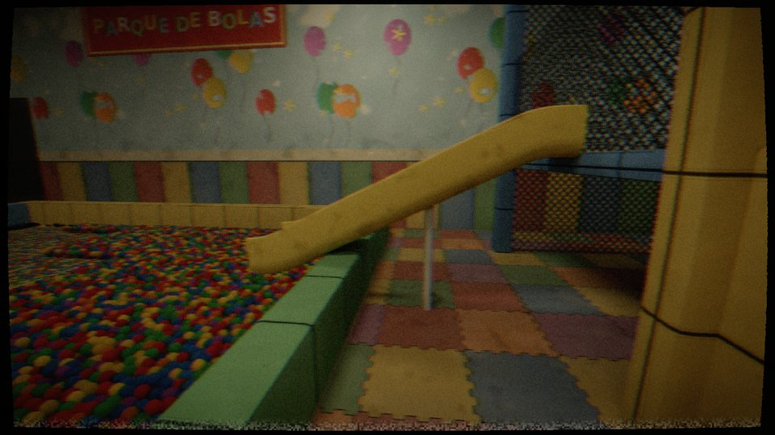
Calidad GPU: luz y texturas 4K
- Luz 4K horneada en la GPU en el Parque de bolas y los Poolrooms: lightmaps de 4096 (antes 2048), con sombras de contacto más finas y sin grano. En calidad Baja se usa una versión ligera.
- Texturas PBR con más detalle: el nivel 0 a 4096 y el resto de materiales principales al doble de resolución, con el aspecto de siempre.
- Tobogán nuevo de plástico de verdad: canal curvo y liso con barandillas rectas. El de antes se veía casi negro y como una cinta.
- Fuera manchas negras en el Parque de bolas: paredes interiores de las piscinas, redes, tubo en espiral (ahora translúcido), sala de fiestas y bloques de espuma.
- Bolas vivas: todas se mecen, se apartan en cadena y hacen ondas cuando alguien vadea (también compañeros y monstruos), y algunas ruedan por encima. Adiós a la capa plana «de foto».
- Multijugador: clave del servidor renovada. Todos necesitáis la v7.1.1 para usar el servidor oficial (protocolo MP-6).
-
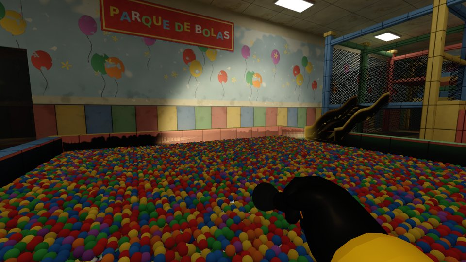
Nuevo nivel 6: Parque de bolas
- Un parque infantil cubierto, abandonado: piscinas con miles de bolas de plástico, estructuras acolchadas de varias alturas, toboganes de tubo, redes, una sala de cumpleaños y un mostrador de meriendas. Colores desvaídos, polvo y fluorescentes que parpadean y zumban.
- Te hundes en las bolas: al meterte en una piscina vas más despacio, las bolas se apartan alrededor de tus piernas y suenan al rozarlas.
- El Sumergido, su propio monstruo, se esconde debajo de las bolas. Si ves que la superficie se abomba, aléjate: sale de golpe entre una lluvia de bolas.
- Una de las llaves está medio enterrada en una piscina. A lo lejos suena una caja de música… y a veces, risas.
- Tres notas nuevas, luz cocida en Blender Cycles, versión ligera en calidad Baja y cooperativo completo.
- Aparcamiento arreglado: en algunos mapas la cabina del ascensor tapaba la otra salida de la sala de inicio y te dejaba encerrado en un callejón. Ya no pasa.
- Multijugador: todos necesitáis la v7.1.0 (protocolo MP-6).
-
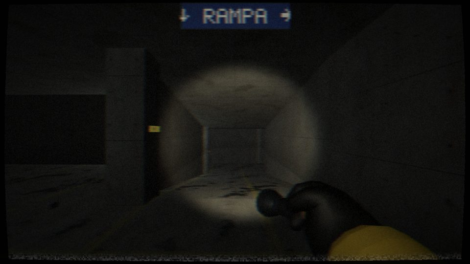
Adrenalina, llaves señuelo y un aparcamiento sin fin
- Adrenalina: si un monstruo te persigue, aguantas más corriendo y vas un poco más rápido. Oirás tu corazón y la barra RES se pondrá roja.
- La salida está cerrada con llave. Hay varias llaves parecidas y solo una abre; las que no sirven se marcan en rojo. En el Campo infinito, búscalas dentro de las casas.
- El aparcamiento ahora tiene cuatro plantas, rampas, callejones sin salida y carteles que mienten. La salida está muy lejos, en la planta más baja.
- En el Campo infinito, compañeros y monstruos ya no desaparecen al cruzar el borde del mundo.
- Los avisos ya no tapan la barra rápida: salen por encima, sobre un fondo oscuro, en cualquier pantalla.
- Multijugador: todos necesitáis la v7.0.4 (protocolo MP-5).
-
El Campo infinito carga rápido
- El nivel 5 ya no se queda tanto rato en «Generando...»: la pantalla de carga muestra el porcentaje y la hierba lejana llega poco a poco mientras juegas, sin tirones.
- Si algo falla al generar un nivel, el juego arranca igual en vez de quedarse colgado.
- Registro de carga paso a paso en el
Player.logpara poder ayudarte si algo va lento.
-
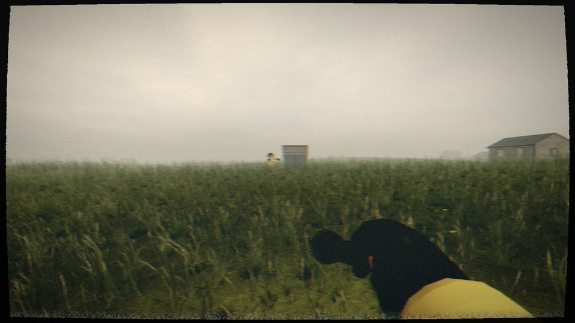
Imitador, silbido y cordura
- Un imitador en cada nivel (del 1 en adelante): alguien igual que tú… que no eres tú.
- Silba con G: tus compañeros te oyen, los monstruos cercanos van a mirar y, a veces, alguien te devuelve el silbido.
- La barra de cordura (COR) baja cerca de los monstruos, sobre todo si los miras.
- Campo infinito sin tirones, objetos dentro de las casas y modelos de objetos realistas.
-
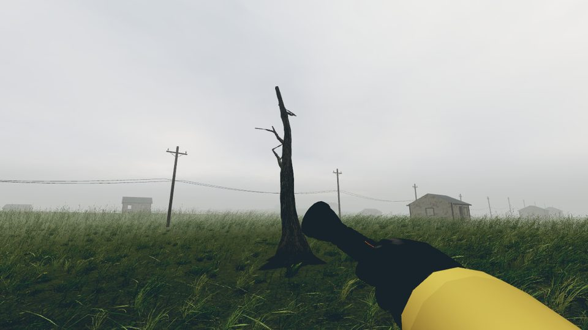
Más realista y ahora se puede saltar
- Puertas, postes y árboles nuevos en el Campo infinito, sin parpadeos.
- Salto con Espacio y los controles siempre a la vista en el HUD.
- Nuevo tráiler.
-
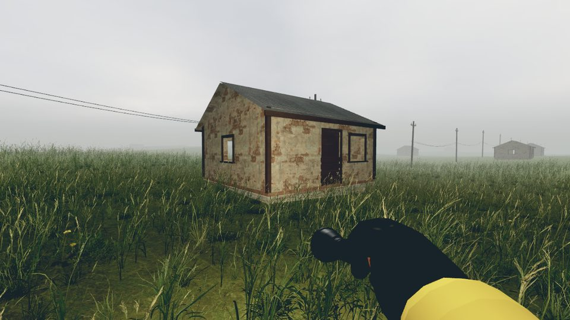
Nuevo nivel: Campo infinito
- Un campo de hierba que no se acaba nunca, casas abandonadas, niebla… y El Vigía mirándote desde el horizonte.
-
La serie 6, en pocas palabras
- v6.9: Poolrooms más bonitas (agua clara, luz horneada en Blender).
- v6.8: sala de piscina fija; arreglado que no se pudiera salir del agua.
- v6.7: inventario nuevo, agua realista y sala de piscina de Blender.
- v6.6: susto de muerte visible y texturas horneadas.
- v6.5: intro de arranque y audio más suave.
- v6.4: ascensor de entrada y créditos.
- v6.3: 5 niveles y mezcla de audio.
- v6.2: multijugador por Internet con código de sala.
// 02
Niveles
Ocho niveles encadenados, cada uno con su estética, su iluminación, su niebla y su propia criatura. Cada nivel empieza con un descenso en ascensor. La puerta de salida no tiene cartel ni flecha: solo la encontrarás explorando.
-
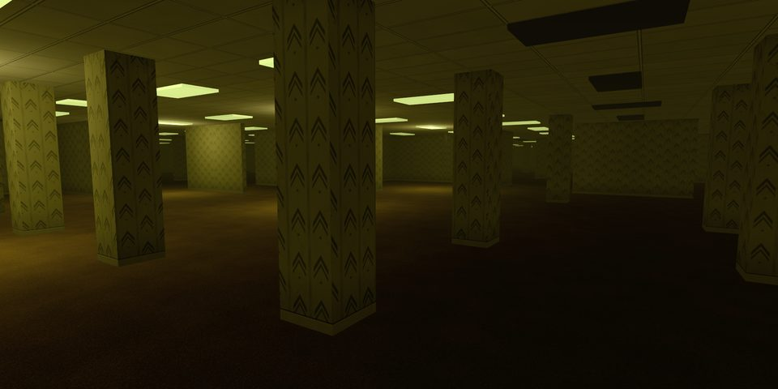
NIVEL 0
Oficinas amarillas
El clásico, ahora más grande y más oscuro: papel pintado amarillento y húmedo, moqueta marrón y salas enormes llenas de pilares. Hay grupos de fluorescentes muertos o que parpadean, y los rincones, los bordes de las salas y lo que queda detrás de los pilares se pierden en la penumbra y en una bruma lejana.
-
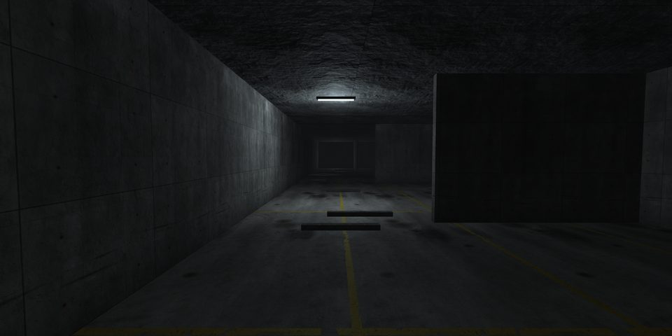
NIVEL 1
Aparcamiento
Cuatro plantas de hormigón unidas por rampas, filas de pilares que no se acaban, callejones sin salida y carteles que mienten. Muy oscuro, con tubos fluorescentes muy separados y a menudo muertos. La salida está en lo más hondo.
-
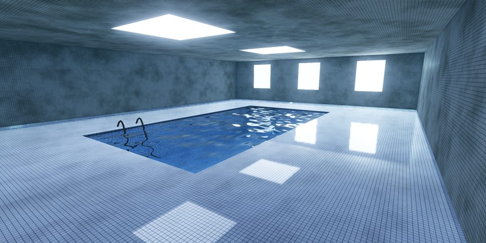
NIVEL 2
Poolrooms
Una piscina interminable de azulejos blancos y agua estancada hasta los tobillos. Luz azulada, pasos que chapotean, olas, reflejos y un avance más lento mientras algo se mueve bajo la superficie.
-
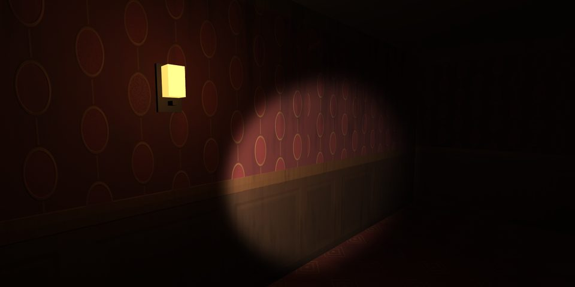
NIVEL 3
Hotel abandonado
Un hotel enorme y vacío: pasillos interminables de puertas numeradas, habitaciones que se abren solas, un salón de baile y un comedor a la luz de la luna. Quedan pocas lámparas vivas: la linterna es imprescindible.
-
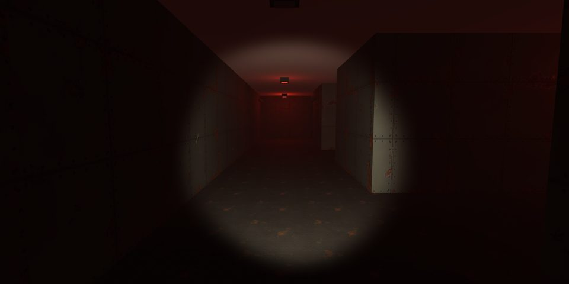
NIVEL 4
Complejo industrial
Chapa oxidada con remaches, suelo de chapa lagrimada, tuberías y luces de emergencia rojas que pulsan. Un laberinto de metal donde cada esquina puede esconder algo.
-
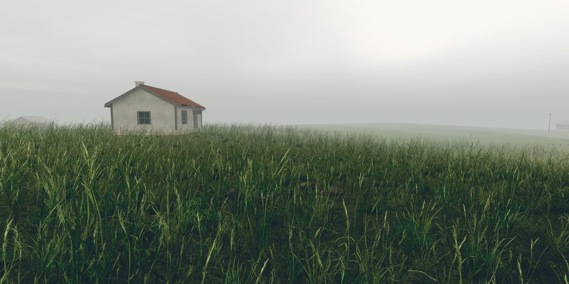
NIVEL 5
Campo infinito
Hierba alta bajo un cielo blanco y una niebla que no se levanta nunca. Casas abandonadas salpican el campo, y dentro de ellas están las llaves. Son tu refugio: los monstruos no pueden entrar. Lo que te sigue entre la hierba se parece demasiado a ti.
-
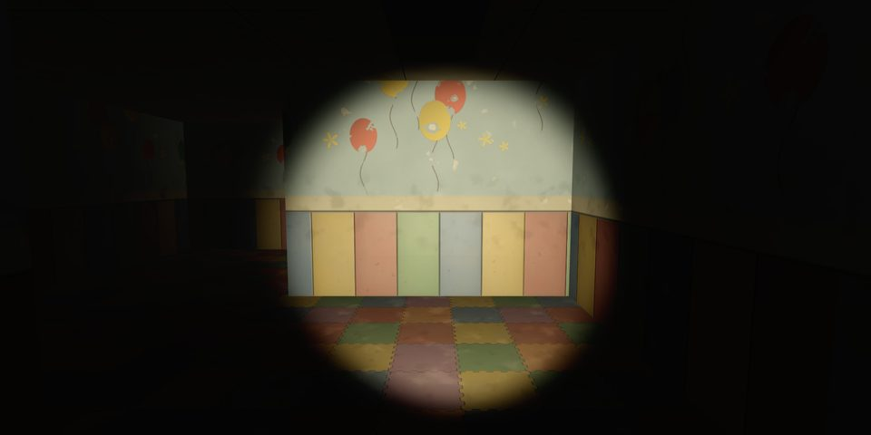
NIVEL 6
Parque de bolas
Un parque infantil cubierto que nadie ha vuelto a abrir: piscinas de bolas, toboganes de tubo, redes, una sala de cumpleaños a medio recoger y un mostrador de meriendas. Algo se mueve bajo las bolas.
-
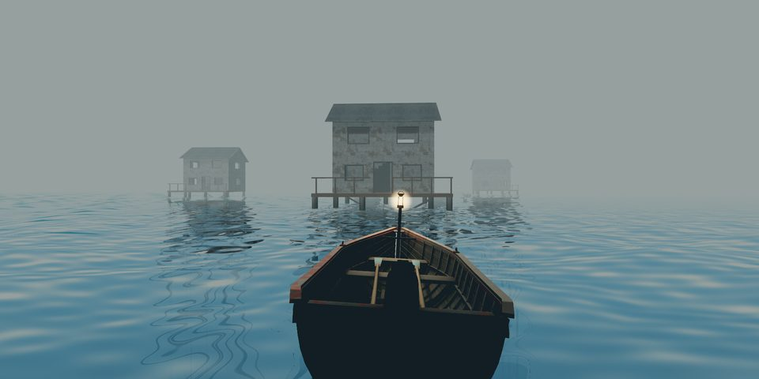
NIVEL 7
Talasofobia
Una casa inundada se abre a un mar gris sin fondo. Nada entre casas sobre pilotes, cruza en barca, llega al faro y baja en jaula con casco de buzo hasta una oscuridad donde una luz pequeña se mueve sola.
// 03
Monstruos
Una criatura distinta en cada nivel. Patrullan, te oyen correr, te ven si llevas la linterna encendida y, cuando te pierden, te buscan.
-

Nivel 0 · Oficinas amarillas El Alto Pálido, ceniciento y estirado más allá de lo humano. Recorre las oficinas sin prisa… hasta que te ve. -

Nivel 1 · Aparcamiento El Coloso Una mole oscura que domina los espacios abiertos del aparcamiento y alcanza a verte desde muy lejos. -

Nivel 2 · Poolrooms El Ahogado Empapado, de ojos fríos y con un lamento que resuena entre los azulejos de los Poolrooms. -

Nivel 3 · Hotel abandonado El Huésped Nunca hizo el check-out. Son dos, ven peor a oscuras y escuchan cada paso sobre la moqueta. -

Nivel 4 · Complejo industrial El Hollín Negro, grasiento y tembloroso. Dos ejemplares, más rápidos que cualquier otra criatura. -
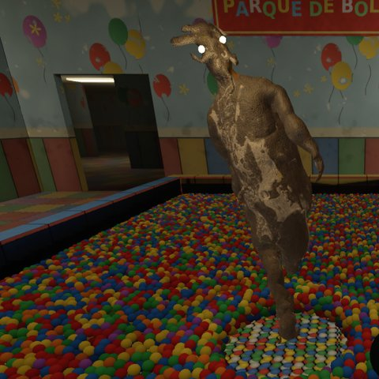
Nivel 6 · Parque de bolas El Sumergido Pasa el rato bajo las piscinas de bolas. Solo verás cómo se abomba la superficie… hasta que sale. -
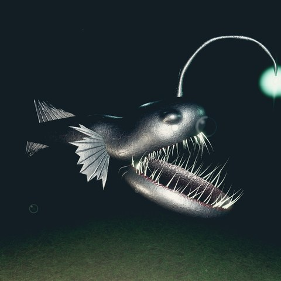
Nivel 7 · Talasofobia El Farolero Patrulla el fondo con su señuelo encendido. Si llevas la lámpara del casco encendida, te ve desde mucho más lejos. Arriba, entre las casas, rondan Los Pálidos.
// 04
Características
-
Salida oculta
Cada nivel esconde una puerta discreta en una de sus zonas más alejadas. Sin carteles, sin flechas, sin indicador de distancia.
-
Texturas procedurales (Blender), niebla y fluorescentes
Desde la v6.6, paredes, suelos y techos con texturas realistas horneadas desde materiales procedurales de Blender (manchas, humedad, óxido, juntas, relieve), niebla de color distinta en cada nivel y tubos fluorescentes que zumban y parpadean.
-
Agua realista
Olas, reflejos, espuma y cáusticas; vadeo con chapoteos, restos flotantes y gotas en la lente.
-
Cámara VHS found-footage
Activa el modo VHS con V: indicador REC, timecode, scanlines, aberración de color y glitches que empeoran cuando algo se acerca.
-
Cuerpo completo con traje hazmat
Mira hacia abajo y verás tu traje amarillo, tus botas y tu mano sujetando la linterna. El traje se empapa al entrar en el agua.
-
Inventario
Pilas para la linterna, agua de almendras para recuperar resistencia y cordura, barras luminosas para marcar el camino y notas por descubrir.
-
Intro found footage y audio más suave
Al abrir el juego, una intro de unos 9 s estilo cinta VHS (se salta con cualquier tecla pasados 2 s) y un sonido ambiente solo tonal, sin «soplo de aire», con opción para quitar el siseo VHS.
-
Descenso en ascensor
Cada nivel empieza dentro de un ascensor que cae a toda velocidad unos 8 s: sacudidas, contador de planta, frenazo, «ding» y puertas que se abren al nivel. Es obligatorio (solo se puede saltar tras morir y reiniciar el nivel) y en multijugador todos bajan juntos en la misma cabina.
-
Multijugador cooperativo Prueba temprana
De 2 a 4 jugadores. Aloja con un código de sala y tus amigos se unen con él: sin abrir puertos, con el servidor oficial incluido. También por IP y puerto TCP 7777 (con UPnP automático) o por VPN. Reanimación, monstruos y objetos sincronizados y chat con Enter. Cómo jugar →
-
Menú de inicio y pausa
Menú principal con selección de nivel, opciones y créditos; pausa con Esc. Volumen, sensibilidad, calidad, head-bob, intensidad del VHS y más.
-
Susto de muerte… o «susto suave»
Si te atrapan, la cámara se clava en su cara con tres planos rápidos (rostro, ojos y embestida), con luz propia para que la entidad se vea siempre: grito, sacudida y pérdida de señal. La opción «Susto suave» reduce volumen, destellos, sacudida y glitch.
La pantalla que no quieres ver
Corte a negro, estática y «SIGNAL LOST». En esta web no hay sustos: esta pantalla es solo una recreación estática del estilo del juego.
- Pilas
- Agua de almendras
- Barras luminosas
- Notas
// 05
Multijugador cooperativo Prueba temprana
Escapad juntos de las Backrooms: de 2 a 4 jugadores. El modo de un jugador no cambia.
Aviso: probado en local y con un servidor intermedio real; las pruebas con amigos por Internet están pendientes. Es una prueba temprana: puede haber fallos de conexión o de sincronización, y la apertura automática de puertos (UPnP) solo se ha probado con routers simulados.
Cómo jugar con amigos
Opción A · Con código (recomendada: sin abrir puertos, funciona incluso con CGNAT)
- Misma versión. Jugad todos con la v7.5.0 (protocolo MP-8). La v7.4.0 y la v7.3.0 usan el mismo protocolo, pero el Nivel 3 (y, en la v7.3.0, algunos mapas del Parque de bolas) no coinciden; la v7.2.0 y anteriores no pueden unirse.
- Anfitrión: menú principal → Multijugador → escribe tu nombre → Alojar con código. La sala muestra un código de 6 caracteres: pásaselo a tus amigos.
- Clientes: Multijugador → nombre → Unirse con código → escribe el código. Entraréis en la sala de espera.
- El anfitrión elige el nivel con ◄ ► y pulsa Empezar. No se puede entrar en una partida ya empezada.
El juego incluye el servidor oficial (servidor intermedio que empareja a los jugadores por el código y reenvía los datos), así que no hay que configurar nada. Su dirección va ofuscada dentro del juego. Puede dejar de estar disponible o cambiar en futuras versiones. Si prefieres el tuyo, el código del servidor (se abre en una pestaña nueva) está en el repositorio.
Opción B · IP y puerto (TCP 7777)
- Anfitrión: Alojar partida → puerto
7777→ Crear sala. El juego intenta abrir el puerto automáticamente (UPnP) y muestra tu IP local y tu IP pública, con un botón para copiar la dirección. - Si el puerto no se abre solo, redirige el puerto TCP 7777 en tu router hacia tu PC. La primera vez, Windows pedirá permitir el juego en el Firewall: acepta.
- Clientes: Unirse → IP y puerto del anfitrión (admite
ip:puertopegado) → Conectar.
Alternativa (VPN): usad una VPN como Radmin VPN, ZeroTier o Hamachi: todos entráis en la misma red virtual y el anfitrión comparte la IP que le da la VPN.
Qué incluye
- Sala de espera con la lista de jugadores y selección de nivel por el anfitrión.
- Juego por Internet con código de sala (servidor intermedio oficial integrado) o por IP y puerto con UPnP.
- Avatares con el traje hazmat, linterna y nombre sobre la cabeza.
- Monstruos y objetos sincronizados: el primero en llegar se lleva la pila.
- Reanimación: si te derriban, un compañero que se quede a tu lado unos 4 s te levanta.
- Chat de texto con Enter (Esc cancela). En multijugador la pausa no detiene la partida.
- El nivel termina cuando todos los jugadores vivos llegan a la salida. Con 3-4 jugadores aparece un monstruo extra a partir del nivel 3.
-
Sala de espera · vista previa de desarrollo
-
En partida · vista previa de desarrollo (compañeros simulados)
// 06
Controles
Teclado y ratón.
- WASD
- Moverse
- Ratón
- Mirar
- Shift
- Correr
- Ctrl/C
- Agacharse
- F
- Linterna
- I
- Inventario
- V
- Modo cámara VHS
- G
- Silbar (los monstruos van a investigar)
- Esc
- Pausa
- Enter
- Chat (solo multijugador)
- R
- Reiniciar nivel
- Espacio
- Saltar
- Espacio/E
- Saltar el ascensor (solo tras morir y reiniciar)
// 07
Capturas
Renders y capturas de previsualización del desarrollo (modelos, traje del jugador, ascensor, intro y texturas). No son el aspecto final con niebla e iluminación del juego.
-
Intro · título · vista previa de desarrollo
-
Ascensor · descenso · vista previa de desarrollo
-
Ascensor · llegada al nivel · vista previa de desarrollo
-
Texturas v6.6 · antes y después
-
Susto de muerte · 5 entidades · vista previa
-
Texturas procedurales
-
Traje hazmat · vista exterior
-
Primera persona · linterna en mano
-
Primera persona · cuerpo visible
// 08
Créditos
Mallas del nivel, texturas, audio, shader VHS e interfaz son procedurales / código del proyecto (sin assets externos). Los modelos de monstruos, el traje del jugador y la cabina del ascensor son CC0 (dominio público); se acreditan por cortesía y trazabilidad.
Modelos de monstruos CC0 / dominio público
| Nivel | Nombre | Modelo (Id) | Autor | Licencia | Fuente |
|---|---|---|---|---|---|
| 0 Oficinas | El Alto | HorrorStalker | HorrorGameMaker.com (City Building Game Art) | CC0 (dominio público) | OpenGameArt (se abre en una pestaña nueva) |
| 1 Aparcamiento | El Coloso | GiantMutant | Eldritch Grim | CC0 (dominio público) | OpenGameArt (se abre en una pestaña nueva) |
| 2 Poolrooms | El Ahogado | DrownedZombie | Rikindle3D (modelo del Huésped, reteñido) | CC0 (dominio público) | OpenGameArt (se abre en una pestaña nueva) |
| 3 Hotel | El Huésped | CityZombie | Rikindle3D | CC0 (dominio público) | OpenGameArt (se abre en una pestaña nueva) |
| 4 Industrial | El Hollín | SootHorror | EmoPreben | CC0 (dominio público) | OpenGameArt (se abre en una pestaña nueva) |
Los modelos originales se convirtieron a FBX con Blender (decimado / renombrado de animaciones donde se indica) y se retexturizaron o tintaron en Unity. Los ojos brillantes, sonidos (gruñidos, pasos), temblor y efectos de terror son procedurales.
Modificaciones de cada modelo
- HorrorStalker (El Alto): retextura pálida/ceniza, estirado en altura; ojos y sonidos procedurales.
- GiantMutant (El Coloso): malla reducida (decimado ~30 %), oscurecida; ojos y sonidos procedurales.
- CityZombie (El Huésped): texturas desaturadas y reteñidas (gris verdoso) con Pillow; animaciones reasignadas al esqueleto con Blender; ojos y sonidos procedurales.
- DrownedZombie (El Ahogado): mismo modelo de Rikindle3D que el Huésped, con textura reteñida azul verdosa y empapada, ojos fríos y lamento de ahogado procedural.
- SootHorror (El Hollín): malla decimada (~45 %) y estirada/encorvada; textura reteñida a negro hollín grasiento; animaciones de zombi (Mixamo) reasignadas con Blender; ojos pálidos, temblor y sonidos procedurales. Licencia CC0 comprobada en la página del autor el 11-oct-2026.
Ascensor de entrada (todos los niveles) CC0 / dominio público
| Parte | Nombre | Autor | Licencia | Fuente |
|---|---|---|---|---|
| Cabina (suelo, paredes, pasamanos, botones, techo) | «Elevator car interior» (Backrooms and Liminal Spaces Kit) | 3D Assets | CC0 1.0 (dominio público) | 3dassets.dev (se abre en una pestaña nueva) |
| Puertas (dos hojas + dintel) | «Elevator door pair» (Backrooms and Liminal Spaces Kit) | 3D Assets | CC0 1.0 (dominio público) | 3dassets.dev (se abre en una pestaña nueva) |
Licencia comprobada el 11-oct-2026 en las páginas del recurso (CC0 1.0, no exige atribución; se cita igualmente). Transparencia: la página indica que el colaborador declara haber usado IA para generar estos modelos; se publican igualmente bajo CC0. Cambios: unidos en un solo FBX con Blender, texturas reducidas, cabina ensanchada un 30 % para cuatro jugadores. El indicador de planta, las luces, el sonido y la animación de las puertas son procedurales.
Cuerpo del jugador (traje hazmat)
| Modelo (Id) | Nombre | Autor | Licencia | Fuente |
|---|---|---|---|---|
PlayerHazmat | «Character Hazmat» | Quaternius | CC0 1.0 (dominio público) | Poly Pizza (se abre en una pestaña nueva) · quaternius.com (se abre en una pestaña nueva) |
Licencia comprobada el 11-oct-2026 en la página de Poly Pizza («Licence: CC0 1.0», «Public Domain (CC0)»). Cambios: GLB convertido a FBX con Blender; eliminadas las armas y el resto de objetos; conservadas las animaciones Idle, Walk, Run y Duck; color del traje cambiado a amarillo hazmat con guantes/botas negros (materiales de Unity). La linterna de mano, el IK del brazo, las sombras y el efecto de empapado son procedurales.
Nivel 2 «Poolrooms»
Nivel totalmente procedural (azulejos, agua con shader propio, luces): no usa modelos externos.
Herramientas
- Unity 2022.3 LTS
- Blender (conversión de modelos y horneado de las texturas procedurales)
- Python/Pillow (retexturizado de los zombis y del Hollín)
// 09
Descarga
Windows PC · 64 bits
Descargar para Windowsv7.5.0 · ZIP de ≈ 269 MB. Descomprime y ejecuta BackroomsEscape.exe.
Aviso de Windows SmartScreen: el ejecutable no está firmado digitalmente, por lo que Windows puede mostrar «Windows protegió su PC». Pulsa Más información → Ejecutar de todas formas si confías en la descarga. Es una build temprana.
Código y versiones (se abre en una pestaña nueva) · Repositorio en GitHub (se abre en una pestaña nueva)
Requisitos del sistema Estimados · por confirmar
Valores provisionales: todavía no se han probado en distintos equipos. Se publicarán cuando haya pruebas.
| Componente | Mínimos | Recomendados |
|---|---|---|
| Sistema operativo | Windows de 64 bits (estimado) | Windows 10/11 de 64 bits (estimado) |
| Procesador | Por determinar | Por determinar |
| Memoria | Por determinar | Por determinar |
| Gráficos | Por determinar | Por determinar |
| Almacenamiento | ≈ 191 MB comprimido / ≈ 300 MB descomprimido (aproximado; puede cambiar) | |